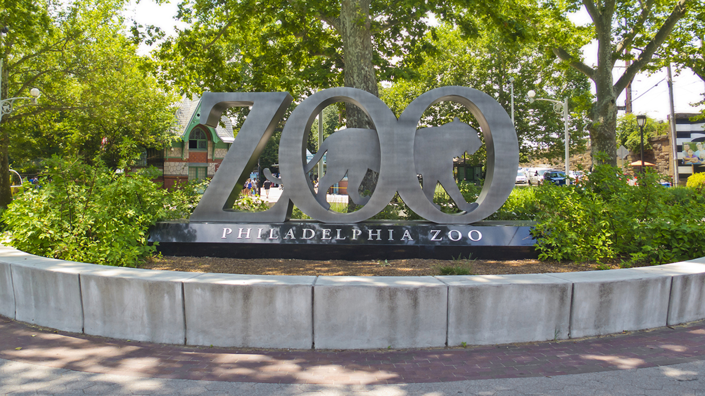

Start your journey through the birthplace of America, cheesesteaks, and Rocky.  Philadelpia is a city of firsts including the country's first zoo which is still open and operating today. The Philadelphia Zoo is open Thursday-Sunday from 9:30am to 4pm. The zoo is located in the Centennial District of Philadelphia on the west bank of the Schuylkill River. Tickets are required amd cost $16 for adults and children. Children under 2 and members get access for free.
The Philadelphia Zoo includes several other attractions besides exotic animals and petting zoos. There is a NEW Nature Blazer Scavenger Hunt available in the park. Participants navigate the exhibits by completing challenges and trivia questions. Guests also have to option to complete the WildWorks ropes course. The course offers two different challenges designed for different ages and skill levels.
There are also several dining options available around the park. Options range from tacos and burgers to the open air beer and wine garden. Members of the zoo are able to qualify for deals and exclusive offers at participating eateries.
If you're looking for a budget-friendly option while exploring the city, then the Rocky experience may be for you. More than just a popular series of Hollywood films or the fictional prizefighter whose life and career they chronicle, Rocky is a late-twentieth-century cultural phenomenon that reframed Philadelphia for local, national, and international audiences.
Primarily set in Philadelphia, with many scenes filmed around the city, Rocky and each subsequent installment in the series (except Rocky IV) offered viewers both an imagined and an actual image of Philadelphia.
The 10 foot tall, 2 ton bronze statue was commissioned by Sylvester Stallone in 1980 for use in the subsequent film, Rocky 3. Posed in the same way, the statue depicts Rocky after completing a run up the Philadelphia Museum of Art's front steps.
If you find yourself on the Benjamin Franklin Parkway, take your picture in front oof the Rocky statue and have your "Gonna Fly Now" experience running up the museum steps.
After your run, head over to 12th and Arch Streets to Reading Terminal Market.
Reading Terminal is an enclosed public market including a wide variety of vendors to shop from. The market opened originally in 1893 under the elevated train shed of the Reading Railroad Company after the city of Philadelphia advocated to move public markets from the streets into indoor facilities for both safety and sanitary reasons.
Since then, Reading Terminal Market has continued to offer unique goods and produce. Reading Terminal also offers a variety of events that have come out of the continued development of the market. Some of these events include a "beer-tasting extravaganza", “Breaking Bread, Breaking Barriers: Food as a Bridge to Cultural Understanding” series and a community gathering benefiting local Syrian refugees who are getting to know their neighborhood.
Feel free to stop by and grab some lunch and some treats any day of the week, as the market is open from 8am-6pm everyday!